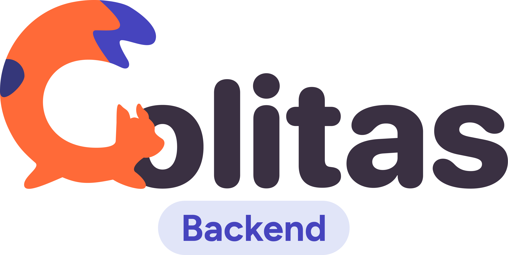

.png)

¡Hola! Soy Daniel Tistoj
Soy de Guatemala, soy desarrollador Backend, tengo experiencia en Java y NodeJs, aunque me gusta mucho aprender todo lo relacionado con Fronted.
Mi objetivo es seguir aprendiendo aun más con relación con el mundo Backend, enfocado al desarrollo web, y en segundo plano aprender mas sobre el desarrollo Frontend, principalmente mejorar mis conocimientos en HTML y CSS.
Si quieres saber más sobre mí, puedes explorar este sitio web o visitar mis redes sociales.
Estadisticas
Tarjetas de resumen de perfil de GitHub
Proyectos
Atenea Project / Backend
Esta aplicación fue hecha para una escuela, la cual tiene como objetivo, automatizar varias de las tareas de los profesores, como la toma de asistencia, el subir nota, generar informes, asignar cursos a estudiantes y asignar profesor a cada grado. Estuve trabajando en el área de backend, donde se desarrolló una API, usando como base de datos FireBase. M encargue de desarrollar los endpoint del modulo de asignar notas, tuve que desarrollar el informe de notas de grado y por estudiante usando la herramienta de NodeJS llamada PDFmake, con el cual se construye la estructura del informe en formato PDF.
Lo más importante que me dejo este proyecto, es el tener que trabajar en equipo, sobre todo con el equipo de Frontend, ya que la comunicación era muy importante para saber que es lo que esperaban ellos de parte de nosotros, de qué forma quería recibir la información, ya que en un inicio asumías muchas cosas y al final no los era muy útil la información que mandábamos a través de la API, por lo que debíamos cambiar muchas cosas que nos hacía perder tiempo. Por lo tanto la importancia de planificar y saber que es lo que debemos de hacer antes de empezar a programar es lo mas importante que me aprendí realizando este proyecto
Encriptador de texto
Este programa fue parte del desafío de Alura Latam, el cual consiste en encriptar y desencriptar un mensaje de texto. Para este desafío tuve que desarrollar la aplicación web, no use ningún Framework de CSS y desarrolle la parte lógica del encriptado con JavaScript. Durante este desafío pude aprender sobre los distintos tipos de posicionamiento y el manejo de las etiquetas, como el uso de Java Script con el contenido HTML, como el adaptar un sitio web a distintos dispositivos, como celulares o tablets.
Sistema de inventario "Tecní Graficos"
Este es un proyecto de escritorio desarrollado en Java, el cual es un control de inventario y de venta para los productos de una imprenta. En este proyecto trabaje con una base de datos relacional, la cual fue MySQL. El sistema tiene módulos de productos y materiales, y cada producto tiene asignado un numero de materiales para su fabricación, a la hora de hacer una venta el material se descuenta y nos alerta si un material se terminó, de igual forma permite el registro de las compras de material, y podemos exportar un informe del stock tanto del material como de las ventas.
En este proyecto aprendí sobre patrones de diseño Singlento que permite realizar una instancia, y proporciona un punto de acceso global a esa instancia. Este patrón es útil cuando solo se necesita una única instancia de una clase en todo el programa y se requiere un acceso global a esa instancia. Esto es muy útil a la hora de hacer una conexión a la base de datos, ya que permite que no se este conectando continuamente durante cada consulta, si no se hace una única conexión, lo que permite un mejor rendimiento en el programa.
HackFest10 2023
Destacada participación en el HackFest10 2023 de la Universidad Rafael Landivar, donde formé parte del equipo de desarrollo de una exitosa página web dedicada a la adopción de perros. Mi enfoque se centró en el desarrollo del servicio de backend, aprovechando las tecnologías vanguardistas como Node.js y MongoDB como base de datos. Mi contribución fue clave para garantizar un rendimiento óptimo y una gestión eficiente de los datos.
A través de mi sólida experiencia en el desarrollo backend, logramos implementar una arquitectura robusta y escalable que permitió una experiencia de usuario fluida y una plataforma sólida para la adopción de perros. Trabajé en estrecha colaboración con el equipo, demostrando habilidades de comunicación efectivas y capacidad para enfrentar desafíos técnicos.
Aficiones


Me gusta la literatura, y uno de mis libros favoritos es "Don Quijote de la Mancha". La obra maestra de Miguel de Cervantes me gusta mucho el ingenio y reflexiones sobre la realidad, creo que es un libro de filosofía, escrito en formato de novela, siempre encuentro algo nuevo al releer algunos de sus capítulos. Me gustan también otros autores como Stephen King, es un muy buen escritor al dar detalles del entorno y de los sucesos de sus novelas, mis novelas favoritas son Misery y cementerio de animales


Uno de mis géneros favoritos de música es el black metal, me gusta mucho la energía y la expresividad artística. Me gustan mucho los riffs oscuros, las voces guturales y las letras que caracterizan al black metal. Mi banda favorita es Withe Ward, es una banda ucraniana, que incorpora elementos del jazz, y en su último álbum “False Light”, tiene momentos ambientales que son cinematográficos.


Mi director de cine favorito es Martin Scorsese, la primera película que vi de fue Taxi Driver, y me atrapo desde el primer momento, me gustó mucho la fotografía y el ritmo de la película. Creo que Scorsese más que contar historias y retrata periodos históricos, las relaciones ya sea de la sociedad con la mafia y el estado, plasmo el entorno social, y en esos contextos se mueven los personajes. Otra de mis películas favoritas es el irlandés, en donde la trama esta envuelta en sucesos históricos como el conflicto entre Estados Unidos y Cuba, o la muerte de John F. Kennedy, y estos sucesos tiene un porque en la trama, creo que Scorsese es un director al cual siempre hay que regresar a sus obras.